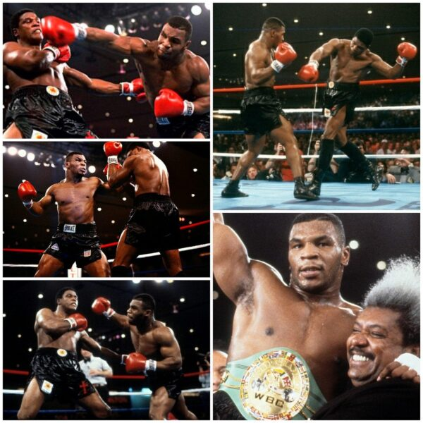

El boxeo es un deporte de contacto en el que dos contrincantes se enfrentan utilizando únicamente sus puños, los cuales están protegidos por guantes. el objetivo es golpear al adversaro hasta lograr la victoria. sige despertando pasion y emoción pese a las controvercias que genera devido a su naturaleza de CONTACTO. a continuacion are una lista con los puntos clave de la diciplina:
los boxeadore luchan en un cuadrilatero, llamado ring
solo pueden usar sus puños para GOLPEAR a su oponente
durante todo el convate, deve de llevar guantes para proteger su mano
el objetivo es NOQUEAR al oponente, o ganar mas puntos mediante golpes precisos, esquivando y bloqueando los golpes del rival
este se sepera en dos categorias olimpico y aficicionado, siendo este el que creo que practican, pero las dos categorias utilizan reglas similares, siendo que la mayor diferencia radica en la cantidad y duración de los rounds
reglamento de el boxeo:
el boxeo olimpico sigue las normas establecidas por la Asociación Internacional de Boxeo (AIBA). acontinuación dejo algunos puntos clave:
area de convate:
Los combates se realizan en un área llamada “el ring”. como ya habia mencionado
El ring tiene una superficie cuadrangular de 7.8 metros cuadrados por fuera de las cuerdas y 6.1 metros cuadrados por dentro.aunque ustedes practiquen la categoria de aficionados las reglas son las mismas.(ya que no cuentan con un ring pueden solo utilizar los parametros para crear un ring improvisado.)
El piso debe ser acolchado y de color azul para proteger a los competidores.
duración de los convates:
aunque la duracion de los conbates puede variar por el nivel de los boxeadores y el tipo de eventos. pero por lo general son estos.
combates profecionales: estos suelen constar de 12 rounds, cada uno de tres minutos de duración, com un minuto de descanso entre rounds. en total un combate profecional suele constar de hasta 36 minutos,incluyendo los descansos.
convates amateurs: la duracion de estos suele ser de tres rounds, con un minuto de descanso entre rouns. esto significa que un combate amateurs dura un total de nueve minutos, incluyendo los descansos.
en algunos eventos importantes, diganse conbates por el titulo mundial los rouns pueden llegar a durar hasta cuatro minutos.
cabe aclarar que el tiempo de una pelea puede variar si hay interrucciones, ya sea atender a un boxeador erido o aplicar penalisaciones por romper las relas.
categorias de peso:
los boxeadores se dividen en categorias segunn su peso, hay 17 categorias, desde peso paja como el minimo hasta peso pesado(sin limite superior)
equipamiento:
los boxeadores deven usar guantes ,protectores bucales y, en algunos casos, protectores de cabeza(especialmente los que practican la diciplina aficicionado)
golpes permitidos:
solo se permiten golpes con los puños serrados y por encima de la cintura. no se permite golpear con la cabeza, codos, las rodillas o los pies.
prohiviciones:
esta prohibido golpear detras de la cabeza, en la nuca, o en las partes blandas. tambien esta proivido morder, empujar o escupir a el opente
conteo de protección:
si un boxeador es derribado, el arbitro inicia un conteo de 10 segundos. si el boxeador no se levanta antes de que termine el conteo, se declara un knockout (KO)
puntuación:
los convates que no terminen con KO se deciden por puntos, otorgados por jueses que evaluan la efectividad de los golpes, la defensa y la agresividad
aqui hare una lista señalando tecnicas basicas el box
golpes basicos
Jab: El jab es un golpe rápido y directo que se lanza con el puño delantero (normalmente la izquierda si eres diestro). Se utiliza para mantener a distancia al oponente, distraerlo y establecer el ritmo del combate.
Directo de derecha: Este golpe poderoso se lanza con el puño trasero. Es un golpe recto que va directamente hacia el objetivo. La correcta rotación de la cadera y la transferencia de peso son fundamentales para lograr la máxima potencia en este golpe.
Crochet: El crochet es un golpe circular que se lanza de lado a lado. Se utiliza para atacar los costados del oponente desde ángulos difíciles de defender.
tecnicas expertas:
Uppercut: El uppercut es un golpe ascendente lanzado desde abajo hacia arriba con el puño en un ángulo vertical. La correcta posición del cuerpo, la flexión de las piernas y el giro de las caderas son esenciales para lanzar un uppercut con potencia y precisión.
Gancho al hígado: Este golpe se dirige al área del abdomen del oponente. Es efectivo para debilitar al rival y frenar su resistencia.
defenza y contragolpeo:
Esquivas: Movimientos utilizados para evitar los golpes del oponente, como movimientos laterales, inclinaciones y movimientos de cabeza.
Bloqueos: Técnicas defensivas para detener o reducir el impacto de los golpes del oponente.
Contragolpeo: Implica aprovechar los ataques del oponente para lanzar golpes efectivos y sorprenderlo.
consejos para mejorar tus golpes:
Mantén una buena postura, equilibrio y coordinación.
Practica constantemente para perfeccionar tus técnicas.
Escucha a tus entrenadores y observa a los boxeadores experimentados.
trayectoria
aqui hablare sobre la trayectoria de mike tyson y el poder del Peek-a-boo
MIKE TYSON, lengendario boxeador, desarrollo la tecnica Peek-a-boo bajo la tutela de cus d'amato. esta tecnica equilibrada en ataque y defensa, permitiendole sorprender a los opentes en el ring. la potencia en sus golpes se vasaba en la transferencia de peso(recordemos que mike era peso pesado) y movimientos constantes. tyson se comvirtio en campeon mundialy su legado perdura en el boxeo
aunque tuvo distintos entrenadores en lo laro de su carrera el mas significativo fue D'amato ya que con el desarrolo su famosa tecnica. d'amato era un vicionario preparador que aplicava la ciencia al boxeo, inculco en tyson los principios y tecnicas que lo llevarian al estrrellato en el mundo del boxeo
como dato curioso podemos recalcar que su atributo principal ere el ataque ya consistia en romper la defenza del oponente(su tecnica podia ser contrarrestada con la misma facilmente)
la importancia del anguo y la sorpresa
angulo de ataque poco convencional
dificultad para prever movimientos de tyson
sorpresa constante en los movimientos de tyson
cambio rapido de direccion para confundir al oponente

la potencia en los golpes de mike tyson
la potencia de los golpes de mike era imprecionante y se destacaba por su habildad para transferir su peso al pie opuesto durante sus desplazamientos en el ring, lo que le pemitia generar una fuerza devastadora en sus puñetazos.
transferencia de peso y generacion de potencia
mike dominaba la tecnica de transferir su peso al pie contrario al golpear, maximizando asi la potencia de sus puños. Este movimiento sincronizado le permitia impactar con ua fuerza inigualable, lo que lo convertia en un rival temible para sus oponentes.
movimientos constantes y deslizamientos
ademas de la transferencia de peso, tyson era conocido por sus movimientos constantes en el ring, nunca dejando de buscar la posicion adecuada para lanzar golpes. Su capacidad para deslizarse hacia adelante y hacia los lados con rapidez le permitia evitar los golpes contrarios y encontrar la apertura para sus devastadoras combinaciones
impacta en el ring y legado deportivo
el impacto de la potencia de tyson se reflejaba en la contundencia de sus victorias y en la imponente forma en la que derrotava a sus rivales en el cuadrilatero.
su legado deportivo perdura como ejemplo de la importancia de la tecnica y de la potencia en el boxeo, inspirando a posteriores generaciones de boxeadores a perfeccionar sus habilidades en el ring.